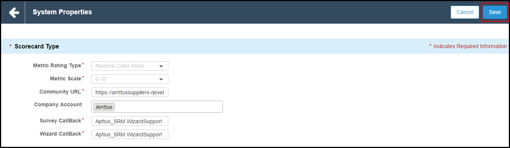

Setting up Scorecard System Settings
The first step in setting up the Scorecard System or rating system is to provide the (rating) criteria to evaluate the performance of a supplier, company, customer, process, or a vision.
The purpose of these settings is to perform evaluation based on Score.
To set up the Scorecard
-
From the Force.com app menu, select the Apttus Score Setup.

- Click Scorecard Setup Console tab, and click Score System Settings.
-
Provide requisite information for the following fields.
Field Name
Description
Metric Rating Type
Select the Metric Rating Type to evaluate the scorecard. The only available option is Numeric Color Band.
Metric Scale
Select the metric scale to score the scorecard. The available options are 10 and 100.
Community URL
Enter the URL of your community.
Company Account
Type the Account Name of your company.
Survey CallBack
Enter the name of Survey CallBack class. Type Apttus_SRM.WizardSupport as text.
Wizard CallBack
Enter the name of Wizard CallBack class. Type Apttus_SRM.WizardSupport as text.
Survey CallBack and Wizard CallBack are used to fetch the values from Wizard package and pass it to the Scorecard package. Then, the runtime calculations are performed based on the fetched values.
-
Click Save.
